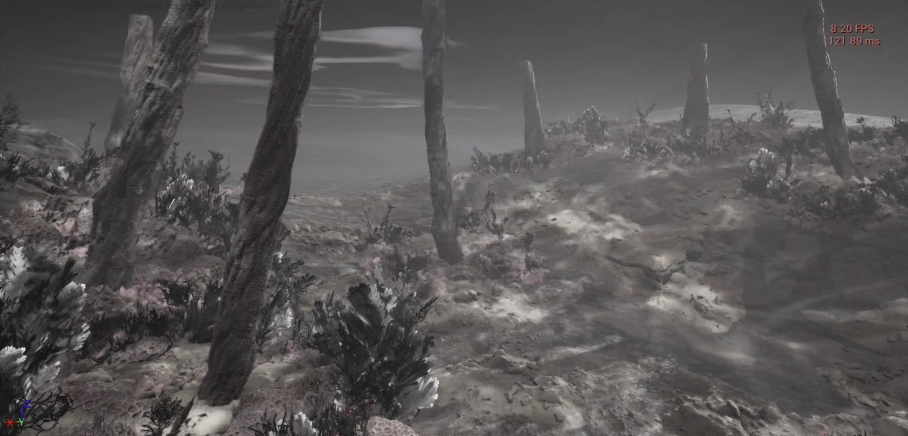
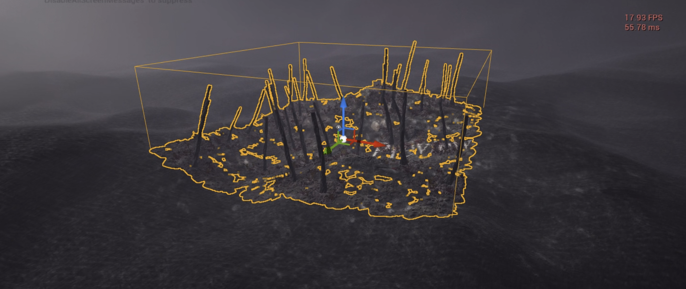
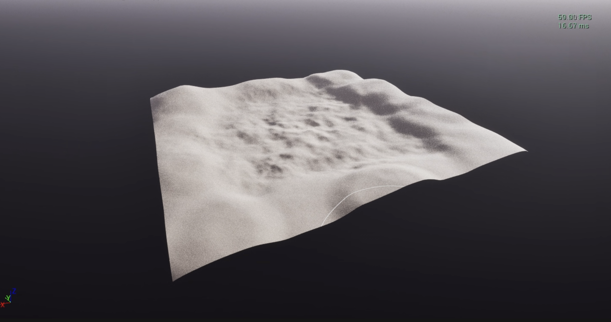
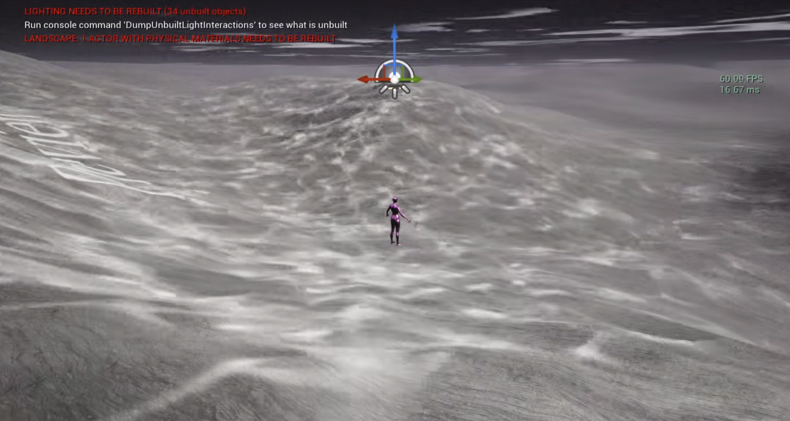
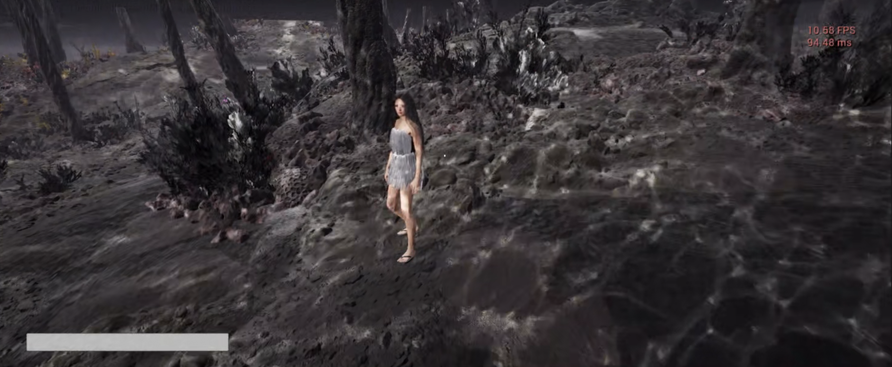
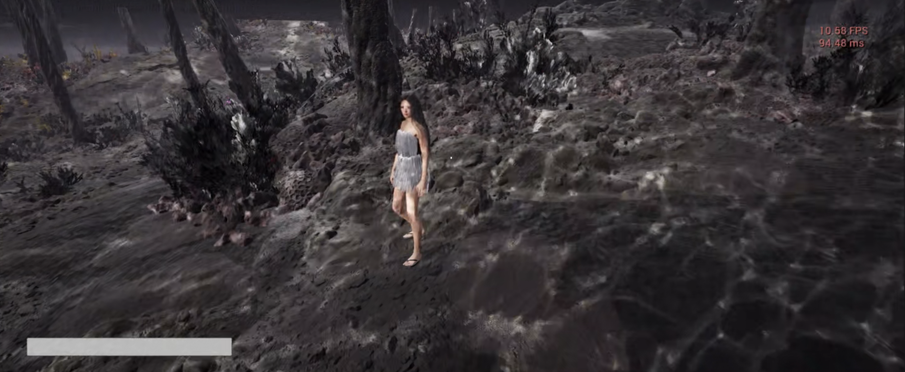
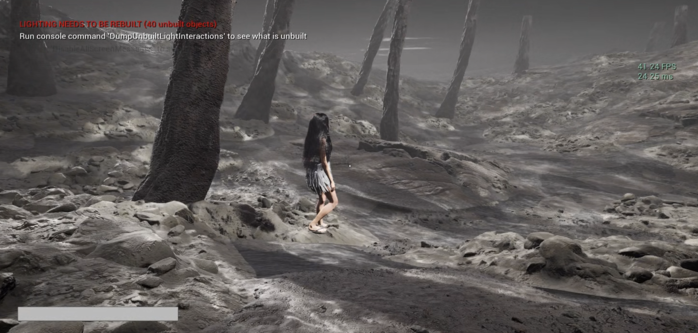
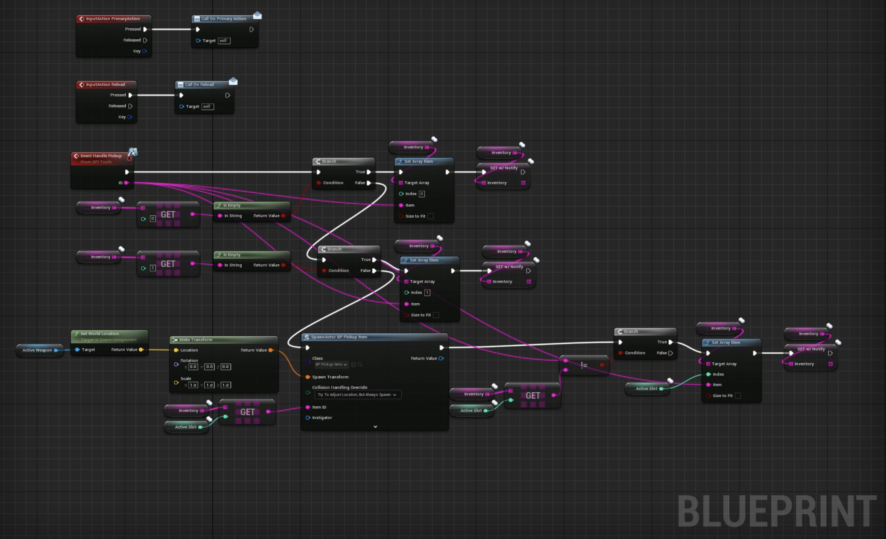
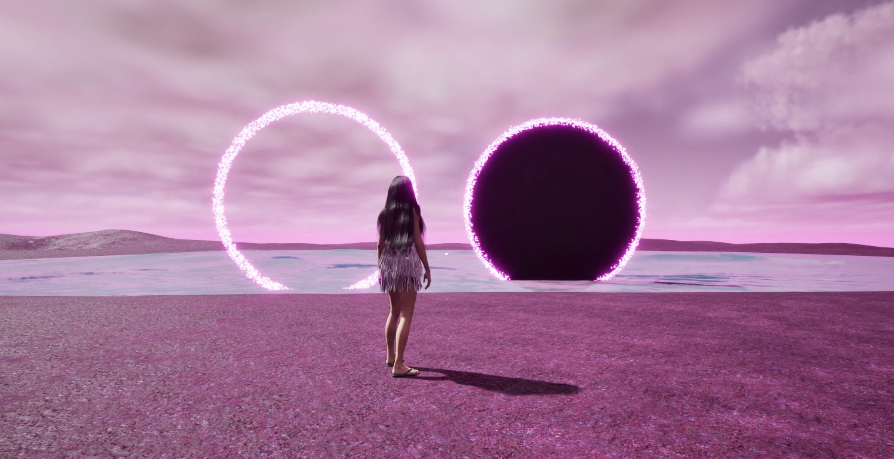

WEEK 7
2204 - 2804WORK PROGRESS
Artwork 4: Unreal Game

The second world, Underwater
I’ve worked on creating another level, which is all underwater, dark, cold, desaturated, and looks dead.
Players can enter into this underwater world through the portal located on the river in the pink world.
 


PCG
I used PCG on a normal map but made sure to keep the PCG volume not too large. I placed bounding boxes on each side to prevent players from going beyond the volume where there is just landscape.
The PCG consists of various kinds of assets, including several ground textures, ground rocks, large rocks, tree trunks, and numerous types of corals and seaweed. They are all Megascans from Unreal’s Quixel Bridge. Once downloaded, all of their materials are modified to match the colour theme of the map.
Once the landscape and ground materials have been placed, the large rocks are blended together with them to create depth on the ground. Tree stems are spawned where there are no rocks, and corals are placed only around the tree stems. Seaweeds are located only around the tree stems and where there are no corals.
Together, they create the gloomy and cold underwater forest, which is designed to capture negative emotions, including feelings of depression, fear, insecurity, trauma, and hatred.

 

The water system
The water was created by utilising a plane with a water material, then flipped upside down. The landscape is modeled to create a lake pit in the middle of the map, with higher altitude around the pit, resembling a pocket for the water.
To emphasise the underwater effect, lighting functions are used to create reflections of waves on the ground. These reflections are generated using a chaos system, which is an automated random wave animation applied as a light function and attached to both the spotlight and the sunlight (directional light). For a more sophisticated appearance, two different chaos systems with varying sizes and speeds of waves are layered.
However, since they capture shadows, including static and dynamic ones, they significantly impact performance.

The Volumetric fog
To convey the feeling of being underwater, heavy volumetric fog was utilised.
The colour of the fog is dark grey to enhance the cold, dark, and depressing atmosphere.

Multiplayer
Designing a multiplayer game required so much extra research and coding.
Learning about servers, hosting sessions, network systems, and platforms for multiplayer games was incredibly helpful in understanding how the multiplayer game has to be built. When testing at home with my computer using the home network, all the multiplayer functions work properly. I definitely have to test packaging and uploading the game to an online platform to see if everything will work as it should!

What is the game about? What is the objective? Outcome?
The game starts with players spawned with the given instructions/information on objectives of the game.
For example, "Find 5 glowing roses to open the portal to the underwater world."
I’ll add a few more lines as an introduction to the game to set the theme, such as:
"Every rose has its thorn. But it’s still beautiful. Every life comes with thorns. But you can still make it beautiful."
Once they start the game, they will look for the roses located throughout the map, including the 4 spots.
The 4 spots are where the Arc open building, Mirrors with pink grass and facial sculptures, cliffs, and the lake with the portal to the underwater world.
On their way to find roses, players will encounter random boxes randomly spawned throughout the entire map, with random chances of containing two different types and numbers of roses. Players can pick up the roses from the box and use them like weapons to increase/decrease the energy/health of other players or NPCs by aiming and shooting at them.
To open the portal, players should find 5 glowing roses scattered around the map. While exploring, they will encounter random boxes with roses, NPCs, and the 4 spots to interact with. Their health/energy bar will be affected accordingly.
If their energy level hits 0, they will be removed from the game.
Once they are in the underwater level, they also need to find 5 glowing roses to activate the portal to go back to the pink world.
Once they enter the world, they will be given 10 minutes and will be asked to end the game or continue.
The game finishes with the player's energy level after the given time.
There are no winners in the game.
The game offers the opportunity to contemplate the idea of the inseparability of good and bad energy, incidents, and emotions in human life.
It explores mixed emotions and the coexistence of depression and delight.
It is inevitable for humans to go through challenges and face hardships, sometimes really harsh ones. However, the game points out that humans still have a choice of which side to focus on. They can choose to move towards the good rather than be consumed by the other.
It is evident that these choices affect people around them.
Humans affect others and interact with each other. If you would not harm others, should you harm yourself?
If acknowledging that one's actions affect others helps prevent dwelling in anger, frustration, and depression, shouldn’t it also make sense to do the same for oneself?
Every rose has thorns.
Everyone has thorns.
But they are all still beautiful
If you choose to see the beauty.

Overall Status of the Game
In terms of the foundational structure and the interaction of the game, they are complete.
I just need to finish up by enhancing the aesthetics.
The sound system is yet to be implemented.
This will be the final touch of the game, as I’m still in the process of creating the tracks.
Additionally, there are other elements that I want to add to the game:
- Swimming animation or player controller movement when entering the lake and the underwater level.
- Chat GPT integration with NPCs.
- Custom clothing options to vary Mintie's appearance when starting the game.
- Sound design.

ARTWORK 07_ TouchDesigner Interactive
I've started working on the visuals for the TouchDesigner interactive aspect as well.
I began by creating mood boards to gather visual inspirations.
The visuals I imagine for this work to be flowy, abstract, fluffy, and flowery.
These visuals will be combined with Mintie as well. Once the visuals are complete, I will work on connecting them to the touch trigger.
I finally received my delivery from Playtronica! I'm so excited to use this for my project.